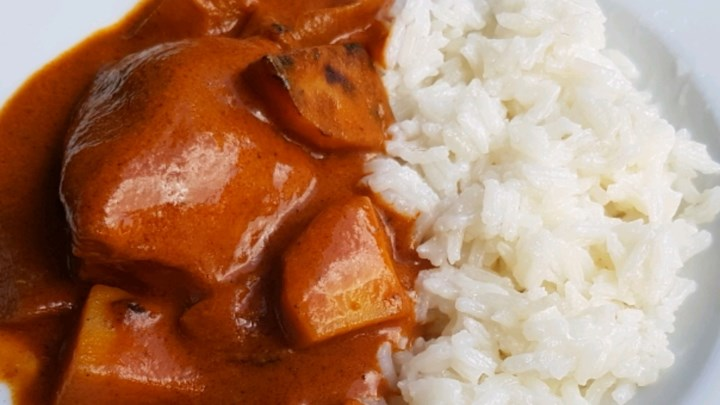

Making curry at home isn't difficult.
Introduction
Curry is a well-known dish loved by many people around the world. The dish was derived from India and Asian culture. Most traditional Indian cooks make their
curry seasoning from toasted whole spices but today we are going to show you how to make a much simpler dish at home. The frist step in any dish is to gather your ingredients. Below is a list of what you will need.
Ingredients
- 8 bone-in chicken breast halves, skinless
- salt and pepper
- 1 tablespoon olive oil
- 2 onions, peeled and quartered
- 1 teaspoon finely chopped fresh ginger root
- 1 teaspoon crushed garlic
- 1 tablespoon hot (Madras) curry powder
- 1 (15 ounce) can tomato sauce
- 1 (10 ounce) can coconut milk
- 4 whole cloves
- 4 pods cardamom
- 1 cinnamon stick
Instructions
- Rinse chicken and pat dry; season with salt and pepper to taste.
- Heat oil in a large skillet over medium high heat, then saute chicken until browned.
- Remove chicken from skillet and set aside.
- Saute onions in skillet until translucent; add ginger and garlic and saute until fragrant, then stir in curry powder.
- Return chicken to skillet and add tomato sauce, coconut milk, cloves, cardamom and cinnamon stick.
- Season with salt to taste and stir all together.
- Reduce heat to low and simmer until chicken is tender and cooked through (no longer pink inside), about 20 to 25 minutes.